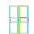

- 
Basha
- The Mission
- The Methodology
- Installation Guide
- Community Decks
Consider us the P2P of
language learning

lksdj skjd fksjf kuekf sk h sef sjeh fkjwekh wje fjweh jfhwe

lksdj skjd fksjf kuekf sk h sef sjeh fkjwekh wje fjweh jfhwe

lksdj skjd fksjf kuekf sk h sef sjeh fkjwekh wje fjweh jfhwe
lksdj skjd fksjf kuekf sk h sef sjeh fkjwekh wje fjweh jfhwe